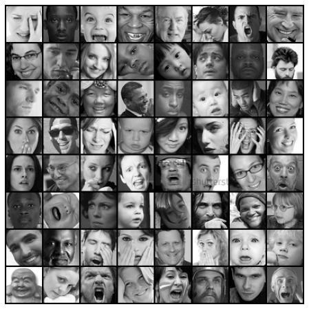

Facial Expression Recognition using PyTorch

Hello everyone, I hope you are doing well during these time. In this post, we're going to look at how to build a facial expression recognition project from scratch using PyTorch. We'll start from simple task such as downloading dataset, dataset preparation to writing our own custom CNN and a build a ResNet-9 for our use case. We'll also experiment with different learning rate schedulers. This article assumes you have some basic knowledge of how PyTorch works. Hope you enjoy it.
This post is a part of my final project for the free course provided by jovian.ml - Pytorch: zero to gans. The notebook accompanying this post: github
Table of Content
- Introduction
- Importing modules
- Dataset Preparation
- Augmentaions
- Building Dataloader
- Setup GPU
- Model Building
- Parent Class and Metrics
- Models
- ResNet9
- Custom CNN model
- Training and Testing Helper Functions
- Training
- Training plots
- Tests conducted
- Summary
1. Introduction
The goal of this project is to classify facial expressions into various categories such as anger, fear, surprise, sadness, happiness and so on. Specifically we are going to classify are datasets into 7 categories such as:
The dataset used for this project can be downloaded from here. This dataset consists of 48x48 pixel
grayscale images of faces. The faces have been automatically registered so that the face is more or less centered
and occupies about the same amount of space in each image.
2. Importing modules
Necessary imports:
3. Dataset Preparation
Now that we know the goal of this project, let's start with the very first step of any machine learning
project i.e. preparing our dataset. After downloading the data, we can see that our data is in a .csv
file. To use this .csv file we can use the Pandas function read_csv(..) to load the
data into memory.
We can see that our .csv file contains 3 columns:
- emotion - contains integer values representing one of 7 emotions.
- pixels - each row contains a string of pixel values seperated by spaces 2304 (48x48) pixel values.
- Usage - it contains 3 unique values
Traininig,PrivateTest,PublicTest. It states which rows are to be used for training and testing purpose.
We're going to combine together the Training and PublicTest rows and use them as
training and validation set, splitted in an 80-20 proportion. We'll use the
PrivateTest rows as our test dataset.
Taking a quick peek at the countplot for the emotion column we can see that there
is heavy class imbalance in our dataset. To remedy this, we'll use different data transformations techniques
available in pytorch.
One simple thing we can do is merge the Angry and Disgust class into one as both as
highly related. Doing this we can decrease some of the imabalance as the Disgust class had the lowest
number of datapoints.
We can do so by:
Updating the emotions dictionary:
Let's first extract the pixel values for each row from pixels column.
Steps:
- Iterate over each row to access the str value.
- use the .split() method to split the string on spaces creating a list.
- Iterate over each value in the list converting them to int and then finally append the whole list of integers in a list named pixels.
- Convert the list to a numpy array.
- Rescale the pixel values by dividing by 255.0
- Drop the original pixels column.
- Add the pixels array created, as a column back in the dataset.
Doing so our dataset dataframe object will now contain 2306 rows, with 2304 columns for pixels, 1 for emotion and 1 for Usage.
Finally now we can now create our custom Dataset class that will come in handy for applying data augmentation and for building our dataloaders. Here we are simply defining methods that will, on each call by the Dataloader help in retreiving the labels y i.e. the emotion and the pixel values i.e. our X values reshaped as a 48x48 matrix as a single tuple of (X, y). Doing this, we can freely define our augmentation methods without worrying about the implementation details. The augmentation for each image can be directly applied during a iteration.
4. Augmentations
There's a whole list of different augmenations we can apply to our images they can be found here.
For this project I chose to go with some basic augmentaions such as:
- RandomCrop: It is used to crop the PIL image at a random location.
- RandomRotation: rotate the image.
- RandomAffine: it applies a suite of random affine transformation of the image keeping center invariant.
- RandomHorizontalFlip: horizontal flip of the image.
- ToTensor: convert the PIL image to a pytorch tensor.
Note that, in every machine learning task we apply transformations only to the training set and not the validation or test set with exception such as normalization, converting to tensors. This is because we want to pretend that the validation & test data are new, unseen data. We use the validation & test dataset to get a good estimate of how our model performs on any new data.
From quora
"The training and testing data should undergo the same data preparation steps or the predictive model will not make sense. This means that the number of features for both the training and test set should be the same and represent the same thing. If your input is an image and you did pre-processing steps like resizing, background subtraction, normalization, etc, the same steps should be done to the test set. If you did data transformation, such as PCA, random projection etc, then the test set must be transformed using the parameters of the training set and then passed to the classifier."
5. Building Dataloader
Straight from the documentaion:
Combines a dataset and a sampler, and provides an iterable over the given dataset.
The DataLoader supports both map-style and iterable-style datasets with single or multi-process loading, customizing loading order and optional automatic batching (collation) and memory pinning.
We'll create 3 helper functions to fetch dataset and return dataloader for each set:
- get_train_dataset(..)
- get_train_dataloader(..)
- get_test_dataloader(..)
6. Setup GPU
To use the power of GPU's we have to first move our data and models that we're going to create onto the
available gpu.
To do this we have to:
- Create a recursive function
to_devicethat iterates over the passed data and loads it into GPU memory. - Create a class
DeviceDataLoaderthat wraps our dataloader and uses the recursive function defined to move the data to GPU when accessed.
Get the current device in use:
7. Model Building
Finally, we've arrived to the exiting part everyone likes, the Building models. For this project I used two models:
- A ResNet9 model
- Custom CNN model from scratch.
We'll divide this section into two parts:
- Creating a BaseClass and metrics.
- Defining two seperate model classes: ResNet9 and custom CNN Model.
7.1 Parent Class and Metrics
Parent Class by definition means a class that contains some properties or methods that are common to all the
inhereting child classes. For our use case we'll create an ImageClassificationBase class that
itself inherits from the nn.Module class from PyTorch. This class will contain some methods that can
be used by the child classes such as:
training_step- method used to perform operations during the training step for the model.validation_step- methods used to evaluate our model on the validation set.get_metrics_epoch_end- contains operations that when called after training or validation step for a single epoch, returns the metrics such as accuracy, loss, val_accuracy, val_loss.epoch_end- prints the current epoch metrics.
The great thing about this class is that it can be used for any image classification problem in PyTorch with little to no updation necessary.
Metric: Using the good old accuracy.
7.2 Models
7.2.1 ResNet9
ResNets architectures by design uses skip connections in residual blocks, because of these skip connections, we can propagate larger gradients back to initial layers avoiding vanishing gradients and these layers also could learn as fast as the final layers, giving us the ability to train deeper networks.
Here, I've updated the default ResNet9 architecture to accomodate for the fact that we have a grayscale
dataset.
We can simply do thid by updating the in and out channels in each conv_block, I've also added an
additional Linear layer classifier block.

(open the image in a new tab and hover over the blocks to see how they are defined.)
Building block of our ResNet9 architecture:
The ResNet9 model class:
7.2.1 Custom CNN model
Let's build a CNN model to compare with the ResNet9 model
In both of these classes we can see a forward method. This method is called by the
training_step method of the BaseClass using self(inputs). This is because when
we inherited the nn.Module class in the BaseClass, it expects the forward
method in it to be overriden. Doing so provide us with the functionality to directly call the model (self) and
pass it any arguments like self(inputs), it'll internally call the model's forward method
and pass it input parameters. We can then choose what we want to do within forward method as seen in
both the ResNet9 class and EmotionRecognition class.
8. Training and Testing Helper Functions
We're nearly at the end of project but first we need to define some helper functions to bind together all the above defined functions and classes.
- Create
fit_modelfunction which is reponsible for training and saving the best model. - Create a
evaluatefunction for evaluating the validation set. - A
load_besthelper function to load our best model for evaluating the test set. - A
generate_predictionfunction for generating predictions on the test set using the best model. - Plotting methods
- A
end-to-endfunction that binds all these functions in a simple single call requiring the name of the model to use and training parameters as a dictionary.
- Functions:
evaluate,fit_model
- Functions:
load_bestandgenerate_predictions
- Functions:
plotting
- Functions:
end-to-end
9. Training
9.1 Models
9.2 Training Parameters
9.3 Train model
10. Training Plots
11. Tests conducted
| model | LR | Test accuracy |
|---|---|---|
| Emotion Recognition | None | 0.659 |
| ResNet9 (current) | None | 0.651 |
| Resnet9 | OneCycleLr | 0.327 |
| Emotion Recognition | OneCycleLr | 0.26 |
12. Summary
We've covered a lot of ground in this tutorial. Here's quick recap of the topics:
- Introduction to the Facial emotion recognition dataset for image classification.
- Prepared our dataset dataframe and created a custom
datasetclass. - Applied Image augmentaions using
torch.transforms. - We created our own helper functions to for fetching datasets and creating dataloaders.
- We also created a wrapper
DeviceDataLoaderclass for ourDataloaderto move our data to the GPU. - We looked at how to use the
nn.Moduleclass and also created aBaseClassthat can be used for any image classification model. - Created our own version of ResNet9 class and a custom CNN model for comparison.
- Created various helper functions to tie different components together.
- Finally we trained our model and plotted the training results.